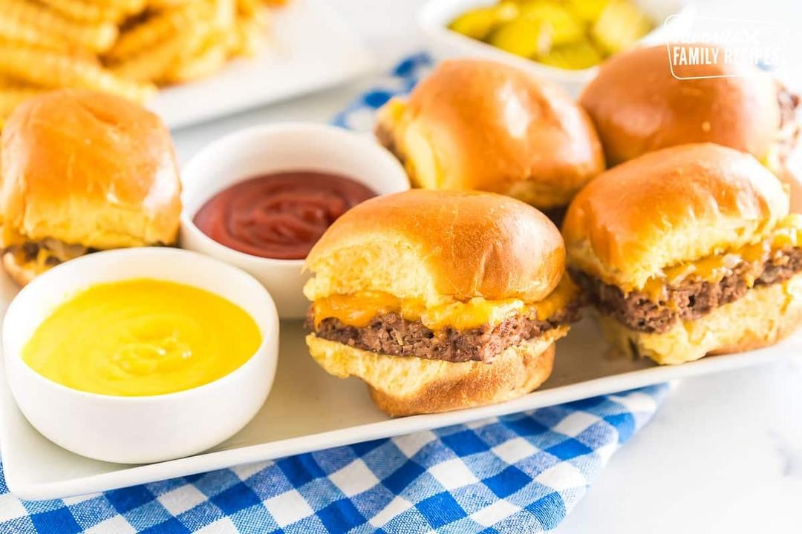

White Castle Sliders

Servings: 12 servings
Active Time: 10 minutes
Total Time: 50 minutes
Ingredients
- 2 pounds ground beef
- 1 (2-ounce) packet Lipton soup mix
- 1 tablespoon peanut butter
- ½ cup milk
- 1 onion, (finely chopped)
- 12 cheese slices (Kraft or Velveeta cheese slices work great too)
- 12 slider rolls
Directions
- 1 Heat oven to 350 degrees F. Set aside a baking sheet. 2 Mix 3 In a large bowl, mix together the ground beef. Lipton onion soup mix, peanut butter, and milk. 4 Bake 5 Spread the meat mixture on the baking sheet. Use a rolling pin to roll over the meat to smooth it out. Bake for about 10 minutes. The meat will shrink. Put the diced onion all around the edges and bake 15 minutes. 6 Melt 7 Remove from the oven, spoon the onions from the edges all over the top of the meat, and layer with cheese slices. Bake another 7 to 10 minutes or until cheese has melted. 8 Bake 9 Add the tops of the rolls (the bottom part of the rolls will just sit on the counter.) Bake for about 5 more minutes. 10 Serve 11 Remove from oven. Slice the meat into individual sliders with a pizza cutter. Pick up the slider meat and its top bun with a spatula and set it on the bottom bun.